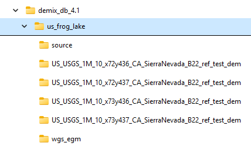
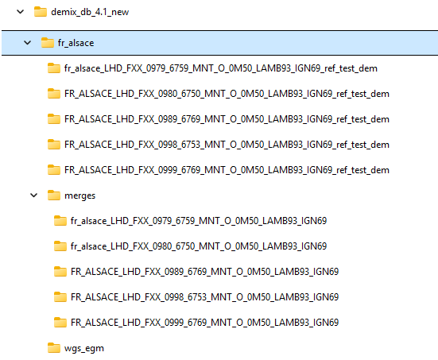
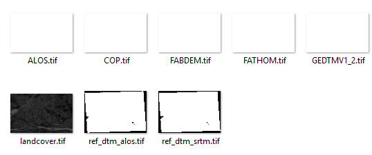

| Tiles with about 10x10 km files from mapping agencies |
Tiles merging multiple files from mapping agencies to get about 10x10 km |
Directory structure with the test area |
 |
 |
- Source has the files from the mapping agency,
with the file names unchanged
- Merges has a folder for each 10x10 tile with the mapping agency
files.
- wgs_egm has the high resolution DEMfiles from
GDAL datum shifts, with the names for the 10x10 km tile
- Each tile has its name, starting with the
country, area, and specific tile, with "_ref_test_dem" as a
recognition flag. It contains the test and reference DEMs,
plus the landcover. This is the only directory needed for the
comparison, but it must maintain this structure and have the
required files with the correct extent.

|
| If you place the files in the area folder, MICRODEM will move them
to source, and create the other folders during processing |
For countries which are currently supported
- For some you can put all
the small files in the area folder. MICRODEM will put them into
separate 10x10 km tile folders, and and the other folders during
processing.
- For others you must create the folders manually.
|
|
We are now compressing the source and merge directions, with either ZIP and
7Z compression, after creation of the wgs_egm files.